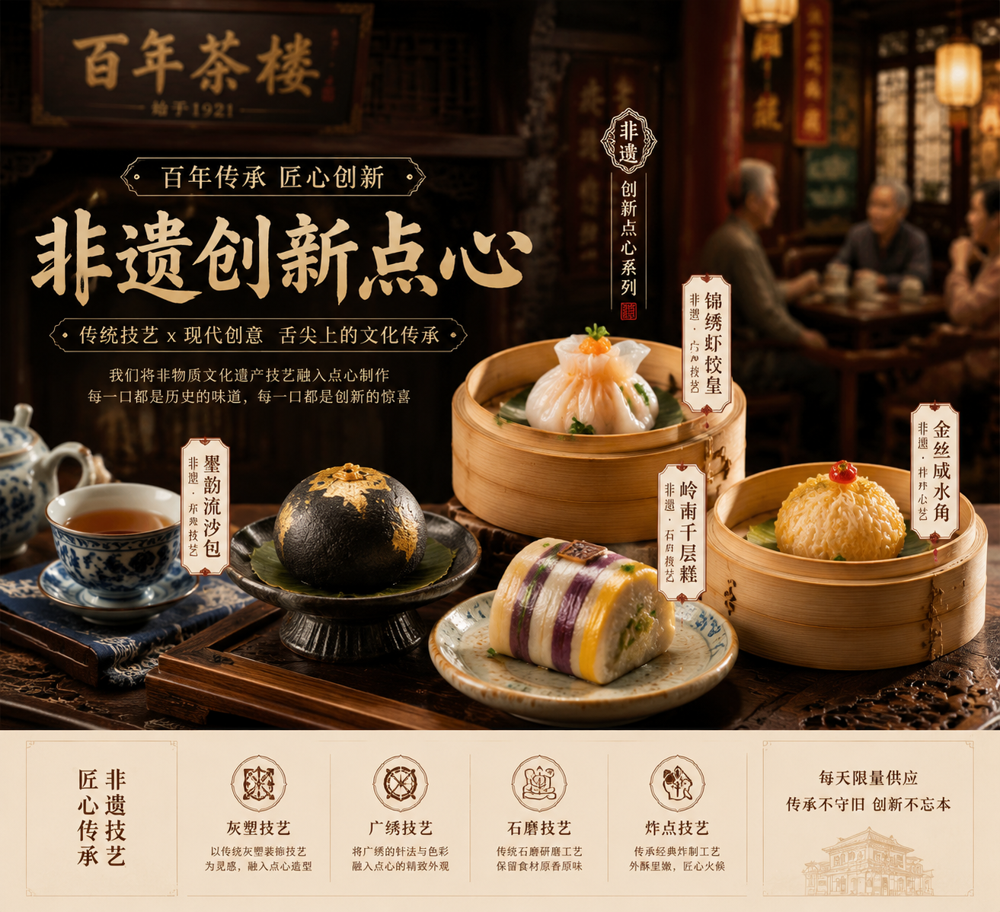

珠江灯光秀焕新升级，点亮羊城夜空
作为广州的地标性建筑，广州塔（小蛮腰）及周边核心区域的夜景照明系统近日完成了全新升级。通过融入最新的节能环保与智能控制技术，珠江两岸的灯光不仅更加璀璨夺目，更展现了科技与艺术的完美融合，为市民和游客带来了震撼的视觉盛宴。
作为广州的地标性建筑，广州塔（小蛮腰）及周边核心区域的夜景照明系统近日完成了全新升级。通过融入最新的节能环保与智能控制技术，珠江两岸的灯光不仅更加璀璨夺目，更展现了科技与艺术的完美融合，为市民和游客带来了震撼的视觉盛宴。

“食在广州”不仅仅是一句口号，更是深植于这座城市血脉的文化。近日，位于荔湾区的一家百年老字号茶楼，将传统广式点心制作技艺与现代年轻人的口味偏好相结合，推出了一系列“国潮”风味的新式早茶，吸引了大批食客排队打卡。
编辑：班级 2509 | 学号 20251021166 | 姓名 侯培源